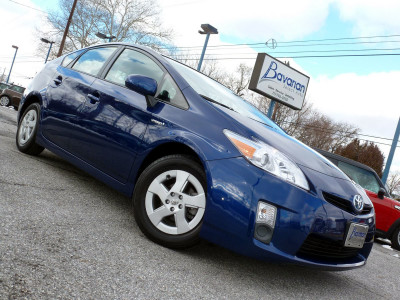

The term "domestic dog" is generally used for both of the domesticated and feral varieties. The English word dog comes from Middle English dogge, from Old English docga, a "powerful dog breed".[12] The term may possibly derive from Proto-Germanic *dukkōn, represented in Old English finger-docce ("finger-muscle").[13] The word also shows the familiar petname diminutive -ga also seen in frogga "frog", picga "pig" from Old English docga, a "powerful dog breed".[12] The term may possibly derive from Proto-Germanic *dukkōn, represented in Old English finger-docce ("finger-muscle").[13] The word also shows the familiar petname diminutive -ga also seen in frogga "frog", picga "pig" generally used for both of the domesticated and feral varieties. The English word dog comes from Middle English dogge, from Old English docga, a "powerful dog breed".[12] The term may possibly derive from Proto-Germanic *dukkōn, represented in Old English finger-docce ("finger-muscle").[13] The word also shows the familiar petname diminutive -ga also seen in frogga "frog", picga "pig" from Old English docga, a "powerful dog breed".[12] The term may possibly derive from Proto-Germanic *dukkōn, represented in Old English finger-docce ("finger-muscle").[13] The word also shows the familiar petname diminutive -ga also seen in frogga "frog", picga "pig" generally used for both of the domesticated and feral varieties. The English word dog comes from Middle English dogge, from Old English docga, a "powerful dog breed".[12] The term may possibly derive from Proto-Germanic *dukkōn, represented in Old English finger-docce ("finger-muscle").[13] The word also shows the familiar petname diminutive -ga also seen in frogga "frog", picga "pig" from Old English docga, a "powerful dog breed".[12] The term may possibly derive from Proto-Germanic *dukkōn, represented in Old English finger-docce ("finger-muscle").[13] The word also shows the familiar petname diminutive -ga also seen in frogga "frog", picga "pig"